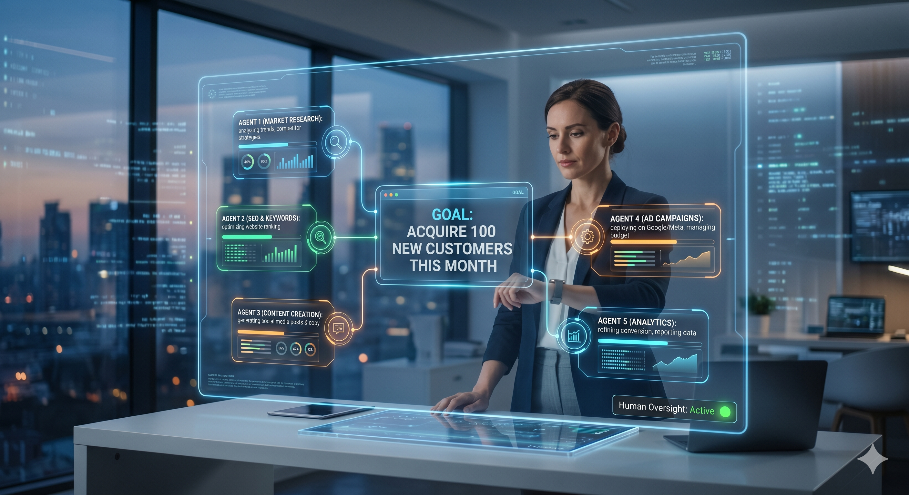

The Era of Prompts is Over; Here Comes the Era of Goals (The Rise of Agentic AI). Agentic AI represents the next major phase of artificial intelligence evolution. Unlike traditional AI systems that respond to discrete instructions, Agentic AI systems can plan, coordinate, and execute multi-step objectives with increasing autonomy. As organizations adopt agentic workflows and multi-agent systems, new opportunities emerge alongside challenges involving governance, security, accountability, and workforce transformation. This briefing document outlines the technical underpinnings, real-world applications, organizational impacts, and strategic steps required to navigate this shift.
Agentic AI refers to a profound shift in artificial intelligence where systems move beyond simply answering queries to actively pursuing and achieving complex, predefined objectives. In essence, Agentic AI operates by breaking down a high-level goal into smaller, manageable tasks, and then executing them autonomously. This capability defines the transition from conversational interfaces to proactive, autonomous problem-solvers.
"In 2024, what we asked AI was: 'Can you write an email for me?' However, in 2026, what we tell AI is: 'Execute a campaign to acquire 100 new customers this month and present me with the final report.' This marks the revolutionary evolution of Artificial Intelligence from prompts to goals."
The world is currently in a critical phase of transformation toward the era of Agentic AI, moving away from a conversational chat mode that merely searches and retrieves information to systems that autonomously plan and execute complex, high-level objectives. If traditional AI was a map showing you the route, Agentic AI is an autonomous vehicle that drives you precisely to your destination.
The structural advancements made in AI technology over the last few years can be understood through the following evolution timeline:
| Period | Nature of AI | Operating Mechanism |
|---|---|---|
| 2022 | Chatbots | Responds to queries and conducts conversations in natural language. |
| 2023 | Generative AI | The widespread adoption of AI models capable of autonomously generating content such as text, images, and audio. |
| 2024 | AI Copilots | Acts as an assistant alongside humans to help with tasks (Coding, Writing). |
| 2025 | AI Agents | Systems capable of executing specific tasks either partially or fully autonomously. |
| 2026 (Emerging Trend) | Multi-Agent Systems & Agentic Workflows | Multiple AI agents collaborate seamlessly as a team to support the execution of highly complex projects. |
To understand this paradigm shift, it's essential to look at how AI agents work under the hood. AI agents do not just generate text; they utilize a robust framework of reasoning, tool use, and memory to interact with digital environments.
When assigned a goal, AI agents analyze the objective, formulate a multi-step plan, use external software (like APIs, browsers, or databases), evaluate their progress, and correct errors along the way. This operational independence is what makes AI agents far superior to standard Large Language Models (LLMs). They can monitor systems, make autonomous decisions, and provide outcomes with minimal human supervision.
While a single AI agent is powerful, the true transformation occurs within Multi-Agent Systems. In these environments, different AI agents with specialized roles interact, negotiate, and collaborate to achieve a broader business objective.
Agentic workflows define the processes and rules by which these Multi-Agent Systems operate. By establishing clear agentic workflows, organizations can ensure that specialized AI agents handle coding, testing, designing, and deployment in a synchronized manner.
Diagram: Multi-Agent System ArchitectureHere is a simplified breakdown of this architecture:
Beyond theoretical frameworks, here is how Agentic AI and multi-agent systems are driving operational transformation across key industry sectors today:
Instead of tasks taking days or weeks in a typical software company, a team of diverse AI agents can now significantly accelerate major portions of the workload and exponentially boost overall productivity:
A dedicated ecosystem of distinct AI agents operates collaboratively to scale sales and growth for an e-commerce enterprise through advanced agentic workflows:
The technical landscape this year is heavily centered around these cutting-edge advancements that fuel Multi-Agent Systems:
The rise of Agentic AI does not mean jobs will completely vanish; rather, industry experts highlight that automation will profoundly alter the core nature of existing roles. As AI agents and multi-agent systems take over mundane tasks, human workers will transition into supervisory and strategic positions.
As we grant higher autonomy to AI agents and multi-agent systems, global technology leaders and ethicists are raising critical regulatory questions regarding AI Governance:
As enterprises prepare for widespread adoption of agentic technologies, leadership teams should evaluate four critical pillars:
Within the next few years, the architecture of the corporate ecosystem is projected to transform drastically. By 2030, the integration of Multi-Agent Systems will be ubiquitous.
"Let us keep in mind, however, that the actual velocity of these projections will depend heavily on technological breakthroughs, alongside the evolution of regulatory frameworks, safety protocols, and mainstream societal acceptance."
To ensure you stay ahead of this rapid technological shift, professionals and executives should actively focus on these core areas starting today:
If the internet interconnected our world, and smartphones brought that world directly into our palms, Agentic AI has the potential to significantly reshape human productivity, organizational structures, and workforce dynamics. In this next quantum leap of technology, the future will not belong merely to those who know how to use AI tools, but to the leaders who can effectively steer, manage, and assign goals to intelligent agent ecosystems.
Remember, while AI will automate specific tasks across various sectors, it will simultaneously unlock a wave of new opportunities for professionals who possess the skills to leverage AI agents effectively. Those are the individuals who will consistently lead the competitive landscape of tomorrow.
What is Agentic AI?
Agentic AI refers to artificial intelligence systems designed to autonomously plan, adapt, and execute multi-step tasks to achieve a high-level goal, operating with minimal human intervention.
How do AI Agents work?
AI Agents work by reasoning through a given objective, breaking it down into actionable sub-tasks, utilizing external tools or APIs to perform those tasks, and iterating based on the results to successfully accomplish the goal.
What are Multi-Agent Systems?
Multi-Agent Systems are networks of multiple, specialized AI agents collaborating, communicating, and coordinating with each other to solve complex problems that go beyond the capabilities of a single agent.
Will Agentic AI replace jobs?
While Agentic AI will automate repetitive and routine tasks, it is expected to transform jobs rather than entirely replace them. It will create new roles focused on AI supervision, strategy, and managing agentic workflows.
What is MCP (Model Context Protocol)?
MCP (Model Context Protocol) is an emerging open standard that securely connects AI agents and models to external enterprise tools, software platforms, and databases, enabling seamless integration and data exchange.